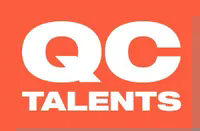

Brand partnerships
Conectamos perfiles y marcas para crear colaboraciones relevantes y auténticas.

← QUÉ CACHONDEO GRUPORepresentamos perfiles con algo que decir. No solo representamos talento. Construimos carreras.
Trabajamos junto a cada perfil para detectar oportunidades, definir su posicionamiento y desarrollar una trayectoria con sentido. Estrategia, acompañamiento y relaciones que abren puertas.
Conectamos perfiles y marcas para crear colaboraciones relevantes y auténticas.
Acompañamiento y desarrollo de carrera con visión a largo plazo.
Relaciones públicas, visibilidad y construcción de reputación.
Defensa de intereses, acuerdos y oportunidades para cada talento.
Dirección y planificación para tomar decisiones con sentido.
Posicionamiento e identidad pública coherentes y reconocibles.
Impulso creativo y profesional para llevar cada perfil al siguiente nivel.
“No solo representamos talento. Construimos carreras.”